1. TopBar level chip 2340f8f
Was showing Mandarin-only XP. Now reflects total across all six stores. Chip = Profile = leaderboard.
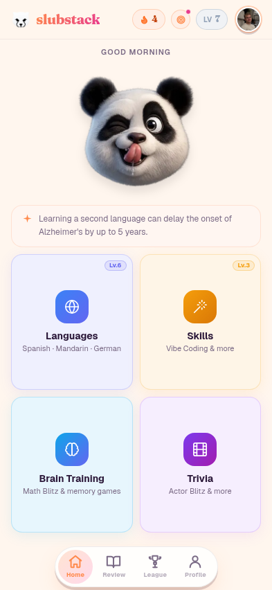
2. Hub greeting + sr-only h1 7a3f163
Greeting was 11px (below the 12px floor). Mobile had no h1 — added sr-only "Slubstack home" for screen readers.
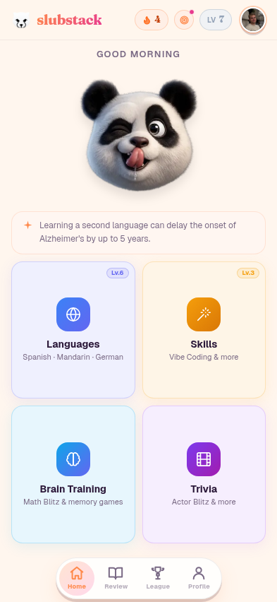
3. Wordle keys 32 → 36px 5d551b9
QWERTYUIOP keys were cramped. Reduced gap + side padding to free room. Letters now extend toward the screen edges.
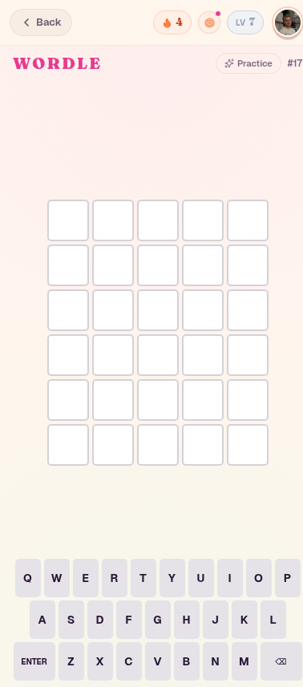
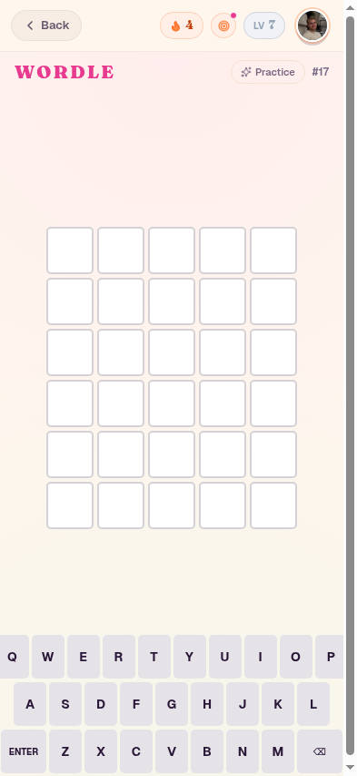
4. Skill tree typography 517aa22
Mobile h1 was smaller than desktop (20 vs 24). Unit / Active / Progress labels all below 12px floor. Affects Spanish, Mandarin, German, Vibe trees.
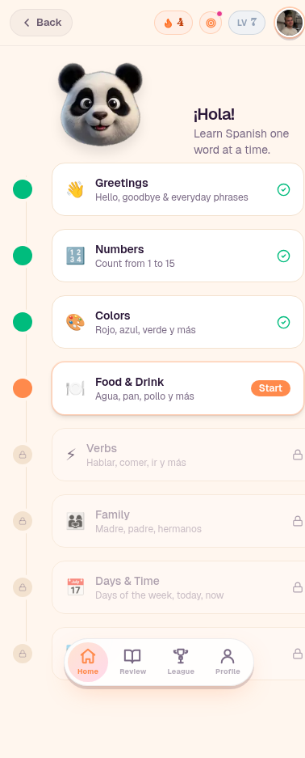
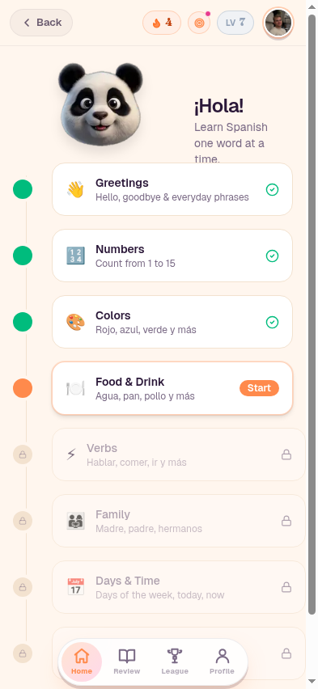
5. Lesson tap targets 5da82c8
Close × was 28×28 (16px under 44pt minimum). Audio button was 27×27. Affects 5 card components: CardShell, MultipleChoice, PluralDrill, CasePick, TypeAnswer.
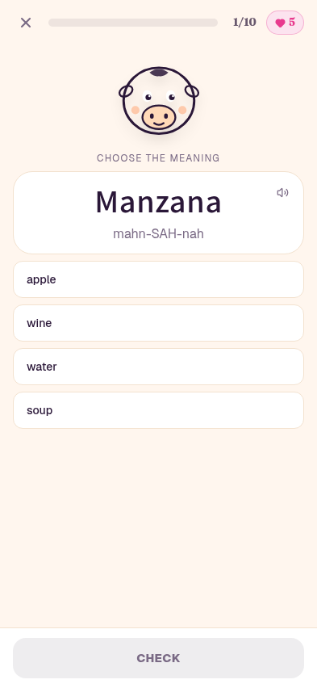
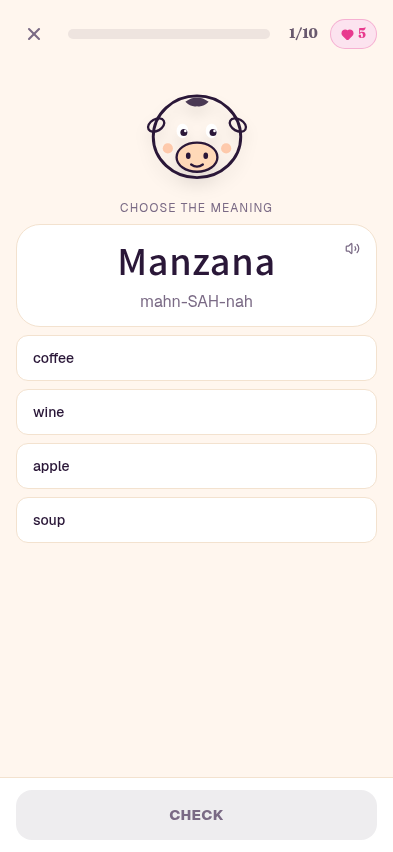
6. Connections tile + h1 644577a
Tiles were 42 tall (under 44pt). "WELLINGTONS" overflowed its 84px tile at 12px. H1 was 20px while sister games were 24–30. Conditional 11px font for words ≥9 chars.
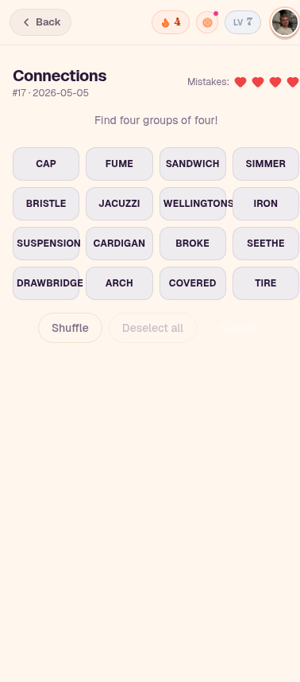
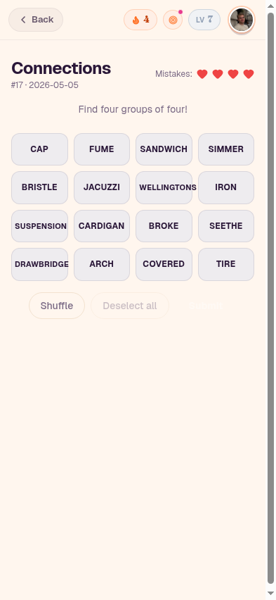
7. TopBar quests button 28 → 36 0852f6b
Quests button (target icon between streak and level chips) was 28×28. Now matches the avatar at 36×36. Visible on every logged-in page.
Compare the small purple target-icon button next to LV chip in the Wordle "before" image (28×28) versus the Connections "after" image (36×36).
Reference — pages with no fixes needed
These were already clean at iPhone 16 viewport.
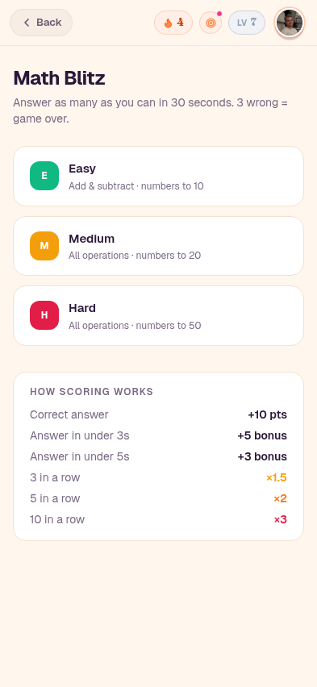
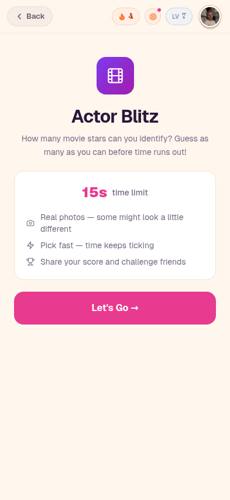